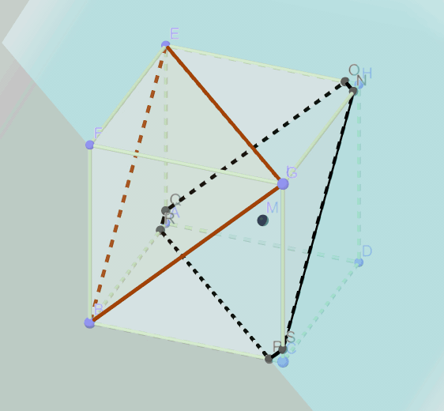

Next:
C5立体几何_L2线面位置关系
, Previous:
C4向量, 复数_L2复数
, Up:
Index
C5立体几何_L1空间几何体
📗 几何体类型
🍋柱

🍋锥
🍋台
🍋球
📗 三视图, 直观图
🍋直观图
🍋三视图
三视图推断几何体的过程
:
判断几何体(常用比喻实物的方法, 割补法)
找底面
找高线
📗 表面积, 体积
🍋表面积
🍋体积
空间几何体类型
:
类型
体积公式
:
表面积公式
:
具体分类
三视图
柱
:
面对面
V
=
S
h
圆柱:
直棱柱:
正棱柱:
斜棱柱:
正方体:
长方体:
平行六面体:
必定有个面是
矩形/平行四边形
其余两个面相同
锥
:
点对面
V
=
1
3
S
h
圆锥:
四棱锥:
三棱锥:
正三棱锥:
正四面体:
必定有个面是
三角形
其余两个面相同
台
:
小面对大面
V
=
1
3
S
大
h
大
−
1
3
S
小
h
小
圆台:
棱台:
必定有个面是
梯形
其余两个面相同
球
:
V
=
4
3
π
R
3
S
表
=
4
π
R
2
三个面都有圆
到底了